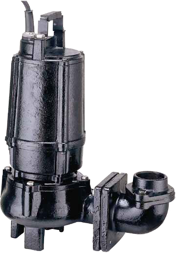
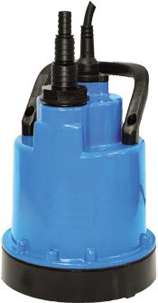
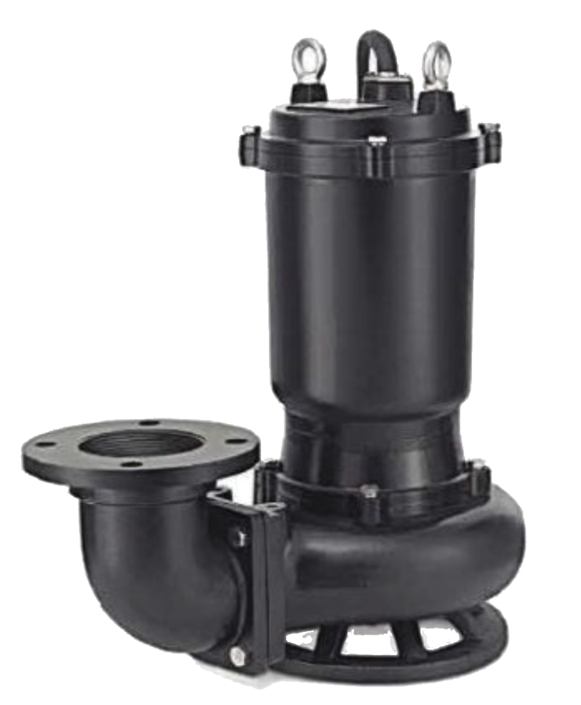
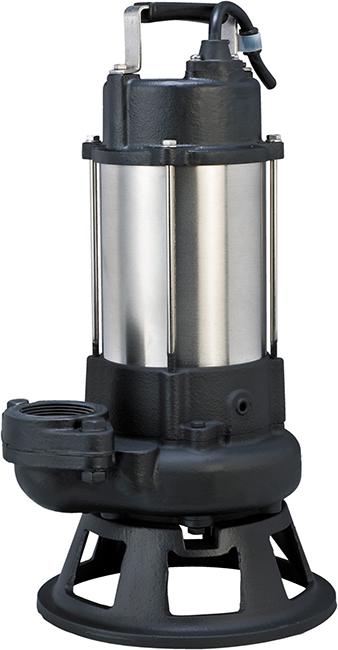
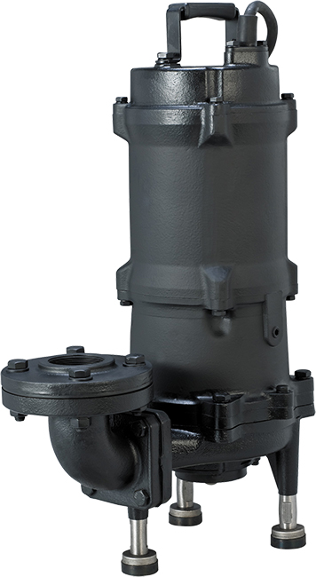
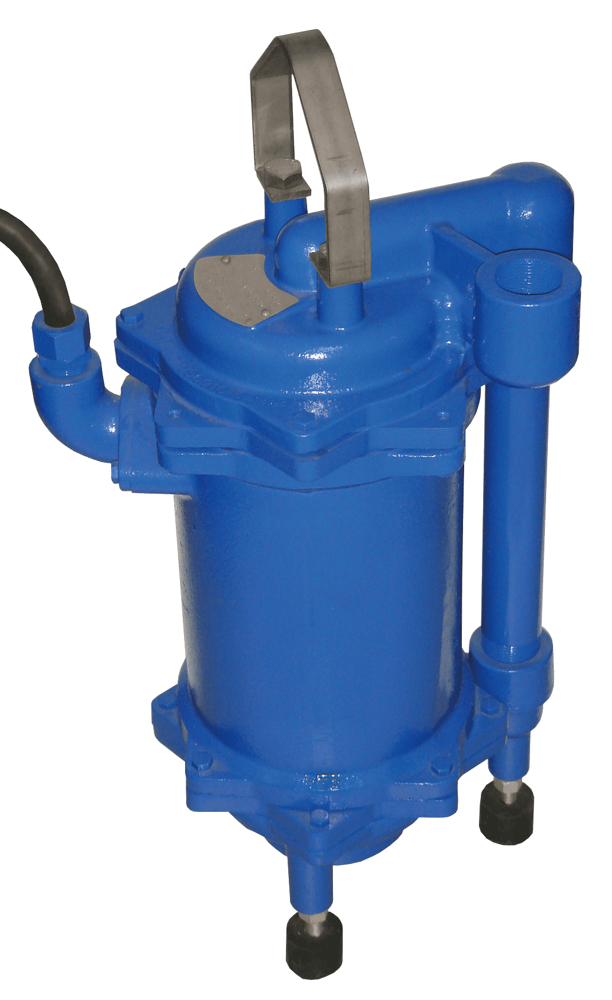
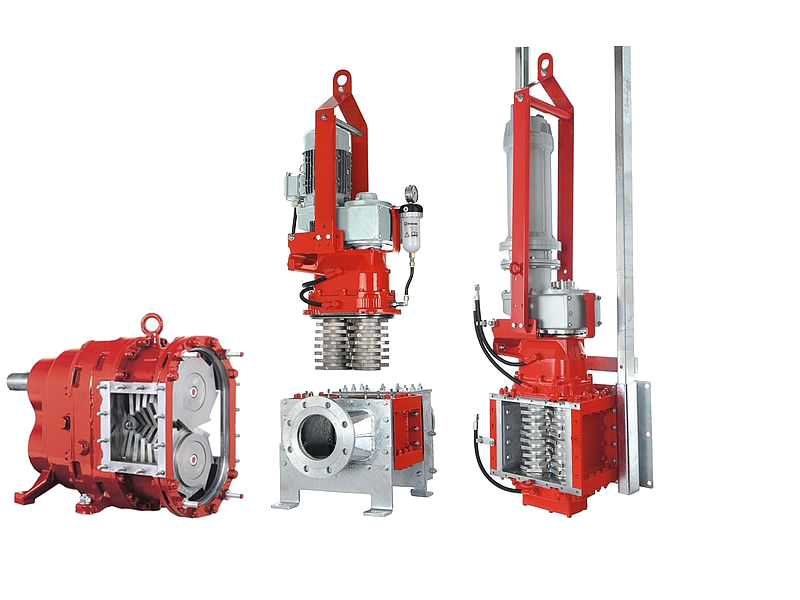

The innovation of the submersible pump over the years
Australia’s Innovation of the Submersible Pump Over The Years As Australia’s preferred pump supplier, Aline Pumps celebrates innovation in pumping…
Read articleAline's Sabre submersible pump range offers a versatile selection covering vortex, dewatering, drainage, cutters, grinders (including high-pressure grinders), and macerators. With over 20 years of experience, Aline provides comprehensive pump systems and can assist with installation and operation. These submersible pumps can be installed in tanks on a guide rail system, featuring quick-connect discharge fittings and controlled via float switches or manual on/off operation, depending on your needs.
When choosing the best submersible pump, consider stainless steel over cast iron for better performance and higher acidic resistance. Stainless steel pumps not only have a superior appearance but also offer greater protection for water sources like wells. Additionally, if using a submersible well pump, a pressure tank is crucial to maintain consistent water pressure and prevent pump motor burnout caused by rapid cycling.

7 products







Australia’s Innovation of the Submersible Pump Over The Years As Australia’s preferred pump supplier, Aline Pumps celebrates innovation in pumping…
Read article
A Pressure Pump for Every Application in Australia Aline offers a large range of solutions for various different pump applications. We work with…
Read article
What Is a Pump Performance Curve? A pump performance curve is a graph that shows how a pump will perform under different flow rates and pressures. It…
Read article
Aline Pumps provides Australia’s best selection of all purpose pumps, with a sump pump range trusted by builders, plumbers and fire protection…
Read article
Under sink pump stations are devices used to move wastewater, where gravity does not assist in moving the water to the sewer. Commonly used in homes…
Read article
If you’re searching for fire fighting pumps for sale in Australia, Aline Pumps offers a comprehensive range of certified solutions that deliver…
Read articleAsk our team to confirm the right fit for your application.
Ask for product adviceSend your application requirements to Aline Pumps or call 1800 018 999.